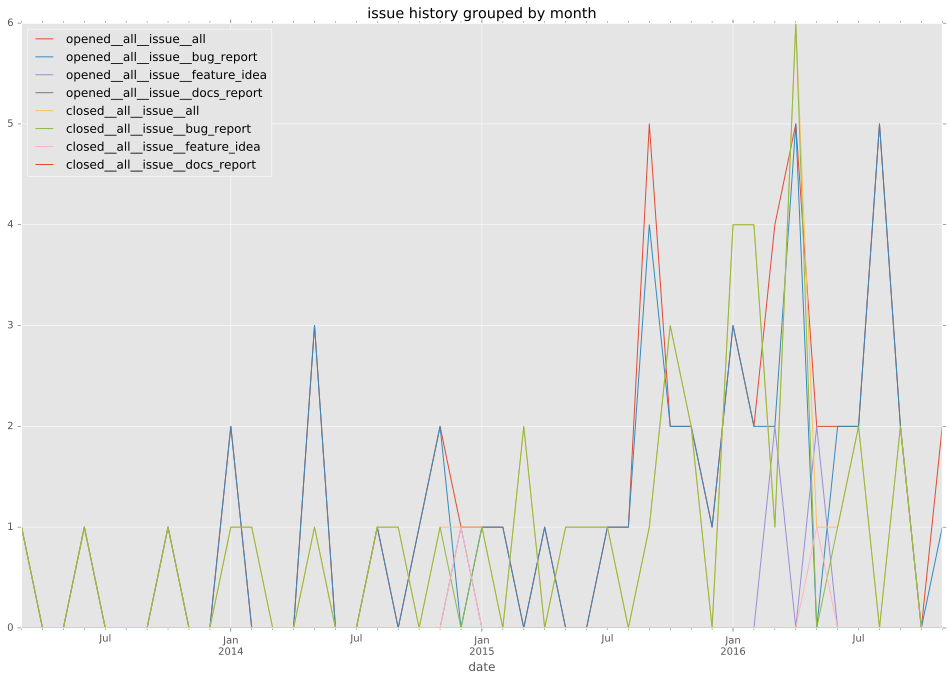
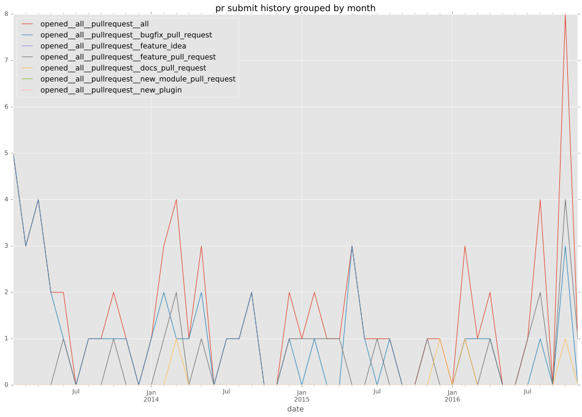

authors
- romeotheriault
maintainers
- romeotheriault
contributors
- romeotheriault : 58 commits
- sivel : 51 commits
- abadger : 26 commits
- wimnat : 10 commits
- srvg : 9 commits
- jpmens : 8 commits
- mscherer : 7 commits
- zecrazytux : 6 commits
- bcoca : 5 commits
- mpdehaan : 4 commits
- jimi-c : 3 commits
- mavimo : 2 commits
- jctanner : 2 commits
- gundalow : 2 commits
- muffl0n : 1 commits
- hver : 1 commits
- dhozac : 1 commits
- danrue : 1 commits
- cspollar : 1 commits
- aioue : 1 commits
total issue counts
feature pull request: 19
docs report: 3
pullrequest: 65
docs pull request: 5
bugfix pull request: 42
feature idea: 5
issue: 57
bug report: 48
issue history

pullrequest history

days open by issue type
bugfix pull request
count: 64
std: 25.5493414633
min: 0
max: 122
median: 1.0
mean: 10.15625
all
count: 141
std: 62.296419402
min: 0
max: 349
median: 2.0
mean: 25.5886524823
pullrequest
count: 0
std: nan
min: nan
max: nan
median: nan
mean: nan
docs pull request
count: 10
std: 0.788810637747
min: 0
max: 2
median: 1.0
mean: 0.8
docs report
count: 1
std: nan
min: 157
max: 157
median: 157.0
mean: 157.0
feature pull request
count: 24
std: 84.5164849712
min: 0
max: 285
median: 7.5
mean: 56.9166666667
feature idea
count: 1
std: nan
min: 3
max: 3
median: 3.0
mean: 3.0
issue
count: 0
std: nan
min: nan
max: nan
median: nan
mean: nan
bug report
count: 41
std: 82.424215007
min: 0
max: 349
median: 2.0
mean: 34.7317073171
closures grouped by total days open